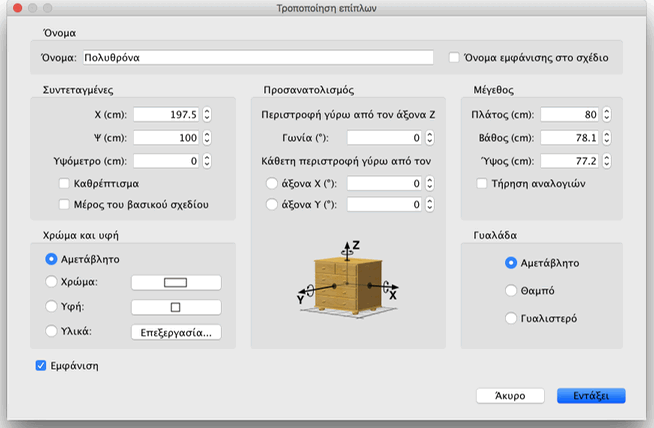

| Επεξεργασία επίπλων | |||
Μπορείτε να επεξεργαστείτε τη θέση, το μέγεθος, το υψόμετρο και τη γωνία των επίπλων της οικίας, είτε με το ποντίκι είτε με το μενού Έπιπλα > Τροποποίηση.... Όταν επιλέγετε ένα αντικείμενο στο σχέδιο, μπορείτε επίσης να αλλάξετε το μέγεθος, το υψόμετρο ή τη γωνία με έναν από τους τέσσερις δείκτες που εμφανίζονται σε κάθε γωνία του επιλεγμένου αντικειμένου.
|

|
Όταν ο ενδείκτης θέσης του ποντικιού βρίσκεται πάνω από αυτές τις γωνίες αλλάζει, υποδεικνύοντάς σας ότι μπορείτε να σύρετε και να αφήσετε τη γωνία για να αλλάξετε το αντίστοιχο ιδιοχαρακτηριστικό του επιλεγμένου επίπλου. Ενώ πατάτε το κουμπί του ποντικιού, μια συμβουλή εργαλείου σας δείχνει την τιμή του ιδιοχαρακτηριστικού/ιδιοχαρακτηριστικών που επεξεργαστήκατε. Μπορείτε επίσης να επεξεργαστείτε ένα έπιπλο χάρη στον πίνακά του, κάνοντας διπλό κλικ στο σχετικό έπιπλο στο σχέδιο οικίας ή στη λίστα επίπλων ή επιλέγοντας Έπιπλα > Τροποποίηση... αφού το επιλέξετε.  Στον πίνακα επίπλων μπορείτε να αλλάξετε το όνομα, την τετμημένη (Χ) και την τεταγμένη (Ψ) του κέντρου του, το υψόμετρο του κάτω μέρους του από το έδαφος, το πλάτος του, το βάθος του, το χρώμα του, την εμφάνισή του ή μη στο σχέδιο οικίας και στην προβολή 3D, τη γωνία περιστροφής του, κατά πόσο το όνομα πρέπει να εμφανίζεται στο σχέδιο ή όχι και κατά πόσο το τρισδιάστατο μοντέλο του πρέπει να έχει σχήμα καθρέφτη. |
|